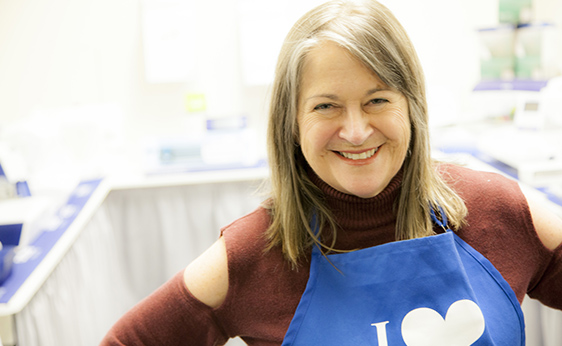

Always a fan of sewing and embroidery, Debbie started quilting in 2000 and has been loving every aspect of the craft ever since. The desire to own a longarm machine to complete her own quilts was the impetus for a business idea.
Sew Many Stitches opened in 2008 as a home-based business offering longarm quilting services to the local quilting community. That business grew consistently year over year in services and products. The ideas kept growing too, and the option to offer a longarm rental program so that clients could also finish their own projects easily and quickly was the spark that saw Sew Many Stitches expand to a storefront in 2016.
